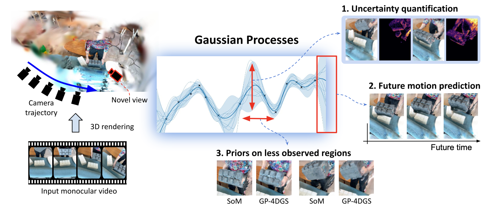
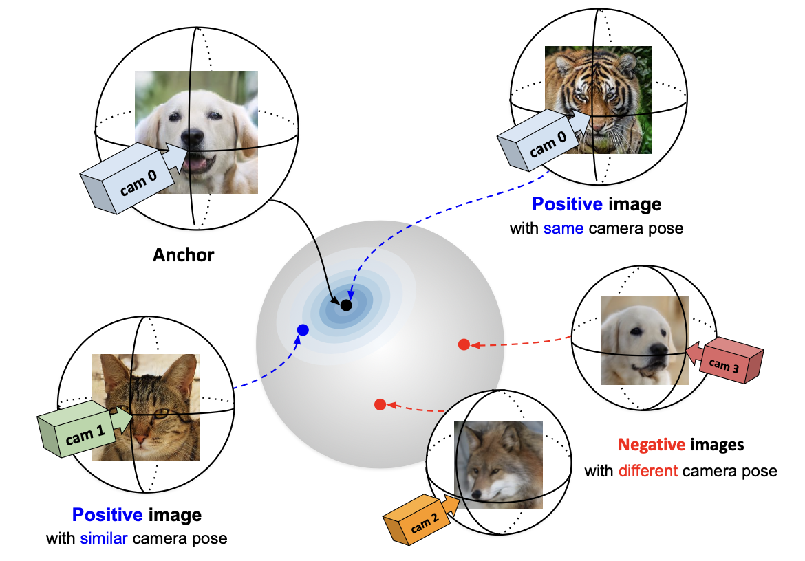
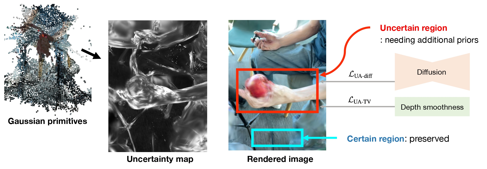
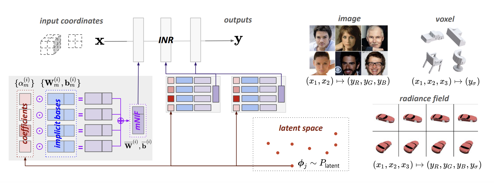
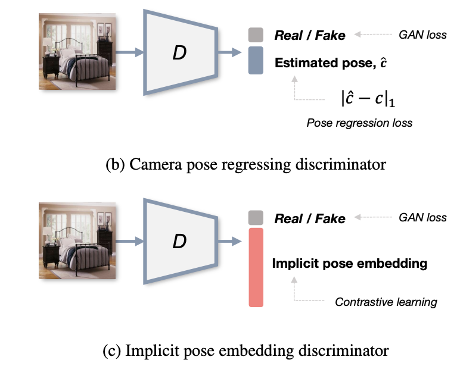
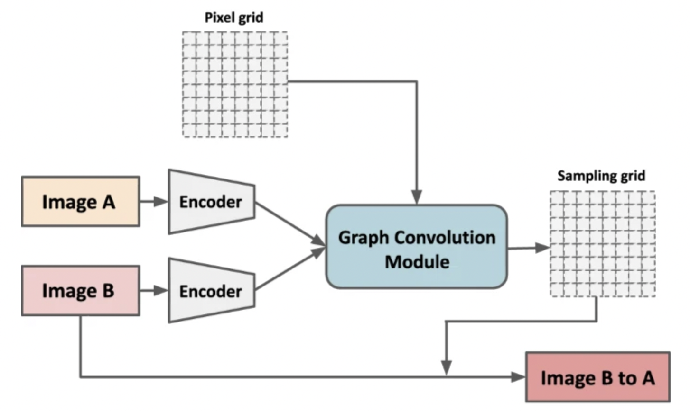

Hello, I'm Mijeong Kim
Ph.D. Candidate · Computer Vision Lab · Seoul National University
My research focuses on probabilistic 3D/4D scene understanding: developing representations that reconstruct and model dynamic real-world scenes from limited visual observations. I am particularly interested in few-shot dynamic reconstruction, 4D world models, and physical AI.
Looking for opportunities. I am actively seeking full-time Research Scientist / Applied Scientist roles starting in December 2026.
News
- Selected as a Rising Star at the Deans’ Forum Women in Engineering Workshop.
- Selected as a Youlchon AI Star.
- Two first-author papers accepted to CVPR 2026.
Education
-
Ph.D. in progress · Electrical and Computer Engineering
Computer Vision Lab, Seoul National University, Korea
Advisor: Prof. Bohyung Han
-
B.S. · Naval Architecture and Ocean Engineering
Seoul National University, Korea
Research Projects
|
PhysGaia: A Physics-Aware Benchmark with Multi-Body Interactions for Dynamic Novel View Synthesis
|
 |
GP-4DGS: Probabilistic 4D Gaussian Splatting from Monocular Video via Variational Gaussian Processes
|
 |
HyperPose: Hyper-pose Embeddings for 3D-Aware Generative Models with Self-Supervised Disentangling of Pose and Scene
|
 |
UA-4DGS: 4D Gaussian Splatting in the Wild with Uncertainty-Aware Regularization
|
 |
Generative Neural Fields by Mixtures of Neural Implicit Functions
|
 |
ContraNeRF: 3D-Aware Generative Model via Contrastive Learning with Unsupervised Implicit Pose Embedding
|
|
InfoNeRF: Ray Entropy Minimization for Few-Shot Neural Volume Rendering
|
 |
Beyond homography: nonparametric image alignment via graph convolutional networks
|
|
Overcoming Forgetting in Federated Learning via Importance From Agent
|


Awards & Honors
- Youlchon AI Star – Rising Star PhD (2026)
Selected as a Rising Star PhD in artificial intelligence. - Deans’ Forum Rising Stars Women in Engineering Workshop (2026)
- Kwanjeong Ph.D. Fellowship (2019-2021)
- Science and Engineering Scholarship by President (2014-2018)
- Talent Medal of Korea, Presidential Medal (2014)
Teaching Assistant
- Samsung Electronics, Korea (Jul 2019 & Jul 2020)
- Hyundai Motors, Korea (Mar 2020 - Jun 2020)
Digital Computer Concept and Practice Introduction to Python, Dept. of EE in SNU
Grants
Deep Learning-Based Pedestrian Removal with Multi-View Data- Fund by Naver (Sep 2019 - Aug 2020)